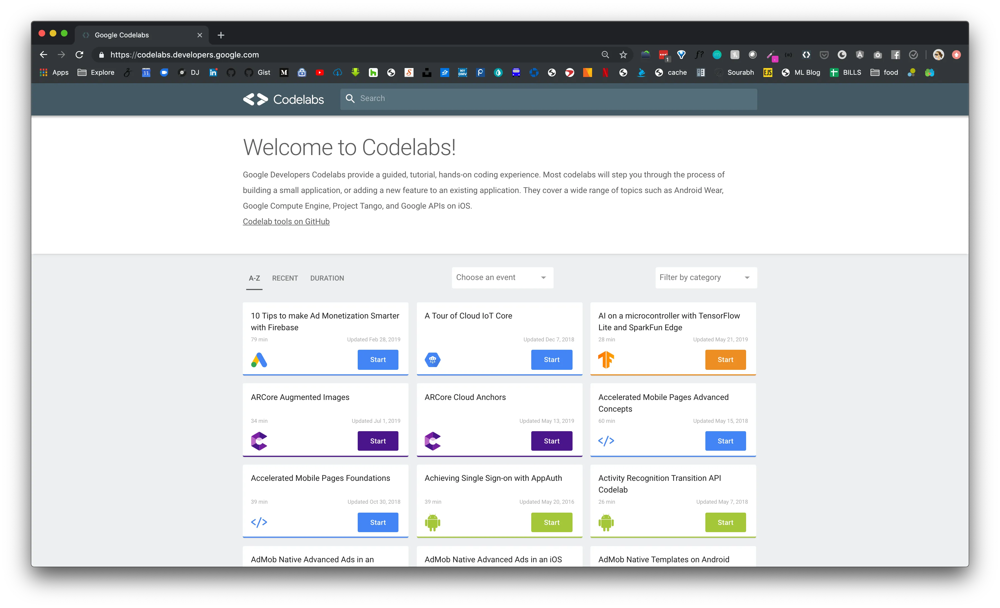
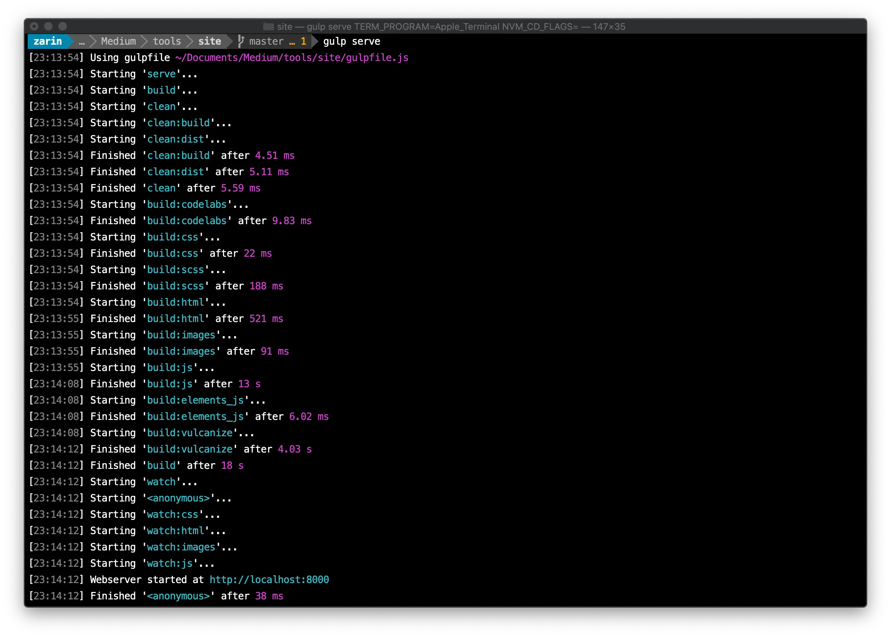
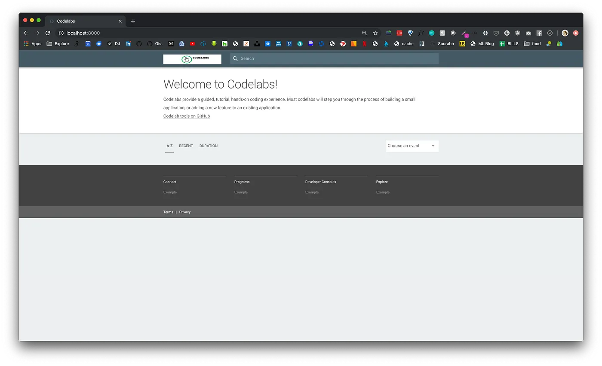
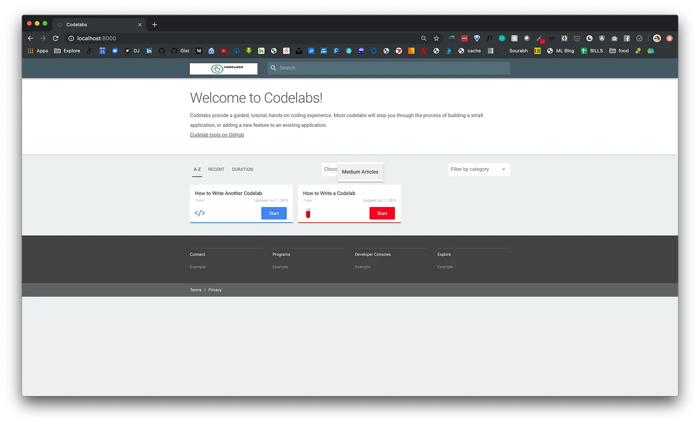

Google Developers Codelab 提供了一种引导式编码实践教程体验。大部分 Codelab 会逐步介绍开发小应用或在现有应用中新增功能的过程。其友好的交互体验，以及丰富的资源，使得 Codelab 成为学习新技能的好方法。Google Codelabs 网站可以通过 https://codelabs.developers.google.cn/?hl=zh-cn 网址访问。
当然，因为 Google 开源了这个网站构建工具，我们也可以基于该工具搭建我们自己的 Codelabs。我们要搭建的网站效果如下截图

本文参考自: https://medium.com/@zarinlo/publish-technical-tutorials-in-google-codelab-format-b07ef76972cd，并使用该作者的素材，加以优化。
需要的环境如下
Golang: https://golang.google.cn/，需要使用到 Golang 语言插件，因此需要安装 Golang 语言环境；claat: https://github.com/googlecodelabs/tools/tree/main/claat#install，这是由 Google 维护的开源 Golang 命令行工具；Nodejs: https://nodejs.org，在编写文章的这个时间节点，虽然 nodejs 更新到了20，但推荐使用12，可以使用 nvm 或者 fnm 来管理你的本地 nodejs 版本；gulp-cli: 用于运行 codelabs 项目的 cli 工具。将 Golang 语言二进制安装包解压到 /usr/local/go 目录，并且在用户目录下的 .bash_profie（或者 .zsh_profile） 添加以下内容
## 指定go语言的安装路径和go语言的项目路径
export GOROOT=/usr/local/go
export GOPATH=$HOME/go
## 将go语言二进制可执行文件设置到PATH环境变量
export PATH=$PATH:$HOME/go/bin:$GOROOT/bin
安装好 Golang 之后，使用以下命令安装 Claat
go install github.com/googlecodelabs/tools/claat@latest
安装完成 Nodejs 之后，直接使用以下命令全局安装 gulp-cli
# 设置阿里云镜像
npm config set registry https://registry.npmmirror.com
# 安装gulp-cli
npm install -g gulp-cli
Codelabs 构建工具已经开源，我们可以从 Github 下载源代码，使用如下命令拉取最想项目
git clone https://github.com/googlecodelabs/tools
拉下来的是整个项目的源代码，我们只需要使用到网站基础框架代码即可，网站基础框架在 site 目录中，执行如下命令运行网站
# 进入网站目录
cd site
# 安装依赖
npm install
# 运行网站
gulp serve
看到如下结果表示运行成功

现在网站已经运行起来了，使用浏览器打开 http://127.0.0.1:8000，可以看到如下页面

现在网站还没有内容，我们将在下一节中添加内容。
先创建一个 codelabs 文件夹，并在该目录下创建资源目录
# 创建codelabs文件夹
mkdir codelabs
# 进入文件夹
cd codelabs/
# 创建资源目录
mkdir assets
此时，文件目录结构如下
tools
|-- site
|--|-- codelabs
|--|--|-- assets
我们先准备一张图片叫 puppy.jpg 放到 assets 目录中。然后在 codelabs 目录下，创建一个 markdown 文件，命名为 how-to-write-a-codelab.md，并在文件中添加如下内容
summary: 如何编写 Codelab
id: how-to-write-a-codelab
categories: codelab
tags: codelab
status: Published
authors: panhy
Feedback Link: https://github.com/webtechwiki/codelabs/issues
# 如何编写 Codelab
## 概述
Duration: 1
### 你将学到什么
- 如何设置每个幻灯片所需的时间
- 如何包含代码片段
- 如何超链接项目
- 如何插入图片
- 其他技巧
---
## 设置时长
Duration: 2
要指示浏览每张幻灯片所需的时间，请在每个二级标题（即 `##`）下设置 `Duration` 为一个整数。
这个整数代表分钟数。例如，设置 `Duration: 4` 表示完成这一张幻灯片需要 4 分钟。
总时间将会自动计算，并在你创建 Codelab 后显示出来。
---
## 代码片段
Duration: 3
要包含代码片段，你可以采用以下方法：
- **内联高亮**：使用键盘上的反引号（`` ` ``）来实现。
- **嵌入代码**：使用代码块显示完整代码。
### JavaScript 示例
```javascript
{
key1: "string",
key2: integer,
key3: "string"
}
```
### Java 示例
```java
for (statement 1; statement 2; statement 3) {
// 要执行的代码块
}
```
---
## 超链接和嵌入图片
Duration: 1
### 超链接
[YouTube - Halsey 播放列表](https://www.youtube.com/user/iamhalsey/playlists)
### 图片

---
## 其他技巧
Duration: 1
查看官方文档：[Codelab 格式指南](https://github.com/googlecodelabs/tools/blob/master/FORMAT-GUIDE.md)
因为我们在创建文章的时候，指定了元信息中的分类为 codelab ，并且指定的 tag 为 codelab，我们必须新建 codelabs 分类。
在 site/app/views 目录下新建一个 codelab，并在该目录下新建 view.json 文件，用于写入分类的基本信息
{
"title": "Codelab",
"description": "与Codelab相关的介绍与帮助",
"logoUrl": "/codelab/codelab-logo.png",
"tags": ["codelab"],
"exclude": [
".*-about$",
"^lang-.*"
]
}
另外，可以我们新进分类的 css 样式，在 /site/app/styles 目录下有一个名为 _categories.scss 的文件。打开该文件并在底部添加自己的条目，因为我们新增了一个类别叫codelab，所以添加了以下内容：
@include codelab-card(['codelab'], #FC0023, 'codelab.svg');
最后准备好一个 codelab.svg 图标，并放在 /site/app/images/icons 目录下，完成这些操作后，该分类系的 codelab 条目将显示 css 中配置的图标，并且按钮会按照我们配置的颜色显示。到此，我们就新建好了一个 codelab 文章以及一个分类。
使用 claat 工具来将我们编写的 markdown 导出 html 网页，如下命令
## go into codelabs folder
cd codelabs
## export md to html
claat export how-to-write-a-codelab.md
现在我们已经编写了第一个 codelab 并成功导出了 html 文件。在 site 目录中执行以下命令运行网站
# 指定codelabs目录为codelabs网站内容目录并运行网站
gulp serve --codelabs-dir=codelabs
成功执行之后，再次打开浏览器，我们新建的文章就显示在 Codelabs 主页里了，并且也在对应的 codelab 分类中。效果如下图：

完成已经步骤之后，我们可以将 site 目录添加到 github 仓库中，并设置 GithubAction 来执行自动部署，我配置好的 Action 如下
name: Deploy Website
on:
push:
branches:
- main # 监听 main 分支的 push 事件
# Sets permissions of the GITHUB_TOKEN to allow deployment to GitHub Pages
permissions:
contents: read
pages: write
id-token: write
# Allow one concurrent deployment
concurrency:
group: "pages"
cancel-in-progress: true
jobs:
# Build job
build:
runs-on: ubuntu-latest
steps:
# Step 1: Checkout the repository
- name: Checkout repository
uses: actions/checkout@v2
# Step 2: Set up Node.js 12 environment
- name: Set up Node.js
uses: actions/setup-node@v2
with:
node-version: '12'
# Step 3: Install dependencies
- name: Install dependencies
run: |
npm install && npm install -g gulp-cli
# Step 4: Build the project
- name: Build project
run: |
gulp dist --codelabs-dir=codelabs
# Step 5: Upload dist folder
- name: Upload dist directory as artifact
uses: actions/upload-pages-artifact@v1
with:
path: ./dist
# Deployment job
deploy:
environment:
name: github-pages
url: ${{ steps.deployment.outputs.page_url }}
runs-on: ubuntu-latest
needs: build
steps:
- name: Deploy to GitHub Pages
id: deployment
uses: actions/deploy-pages@v1